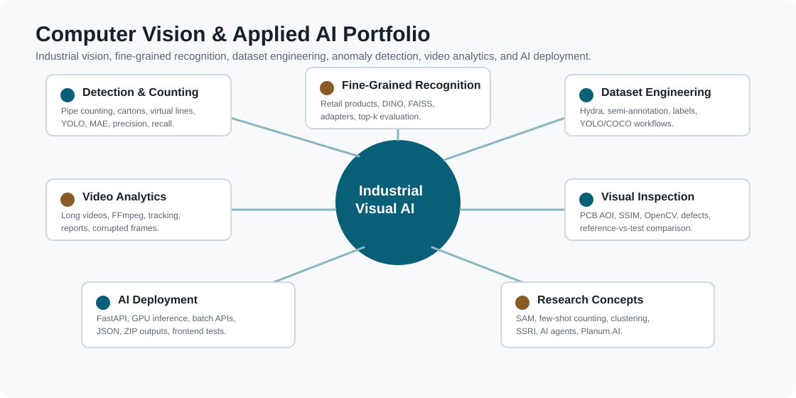

Industrial Pipe Counting
YOLO-based detection and counting for industrial tubes, with baseline reproduction, dataset correction, difficult-case analysis, and counting-oriented evaluation.
YOLOMAEData-centric
Computer Vision & Applied AI portfolio: industrial counting, fine-grained product recognition, dataset engineering, visual inspection, video analytics, AI deployment, and research-driven product ideas.
My work is focused on building complete AI systems, not only training isolated models. The recurring pattern is: collect or annotate data, train or adapt models, evaluate the real operational metric, build tools around the model, and deploy usable inference workflows.

YOLO-based detection and counting for industrial tubes, with baseline reproduction, dataset correction, difficult-case analysis, and counting-oriented evaluation.
Recognition across approximately 500 visually similar products using YOLO, DINOv2/DINOv3, FAISS, kNN, adapters, reference galleries, and FastAPI deployment.
Annotation and semi-annotation platform for faster dataset iteration. Personal contribution: full frontend and part of backend.
Reference-vs-test inspection using OpenCV, alignment, SSIM, difference masks, anomaly crops, and human-in-the-loop region comparison.
The full list is detailed in PROJECT_INDEX.md. This page gives the visible map.
YOLO, DINOv2, DINOv3, ResNet, FAISS, kNN, OpenCV, SSIM, OCR, PyTorch, TensorFlow, scikit-learn.
Annotation QA, YOLO/COCO formats, auto-labeling, difficult-sample selection, Pandas, NumPy, Optuna, Excel logs.
FastAPI, Uvicorn, REST APIs, batch inference, GPU deployment, AWS/EC2, Cloudflare Tunnel, JSON and ZIP outputs.
Python, Go, gRPC, Redis, S3-compatible storage, React, TypeScript, JavaScript, HTML/CSS.
Some projects were built in company contexts. I do not publish private data, client images, model weights, or production code. I can explain anonymized architectures, evaluation protocols, failure cases, and non-sensitive results during academic or professional interviews.